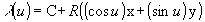
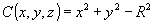

Definition from ISO/CD 10303-42:1992: An IfcCircle is defined by a radius and the location and orientation of the circle. Interpretation of data should be as follows:
C = SELF\IfcConic.Position.Locationx = SELF\IfcConic.Position.P[1]y = SELF\IfcConic.Position.P[2]z = SELF\IfcConic.Position.P[3]R = Radius
and the circle is parameterized as

The parameterization range is 0 £ u £2p (or 0 £u £ 360 degree). In the placement coordinate system defined above, the circle is the equation C = 0, where

The positive sense of the circle at any point is in the tangent direction, T, to the curve at the point, where
NOTE A circular arc is defined by using the trimmed curve (IfcTrimmedCurve) entity in conjunction with the circle (IfcCircle) entity as the BasisCurve.
NOTE Corresponding STEP entity: circle, please refer to ISO/IS 10303-42:1994, p. 38 for the final definition of the formal standard.
HISTORY New class in IFC Release 1.0
Illustration:
 |
Definition of the IfcCircle within the (in this case three-dimensional) position coordinate system. |